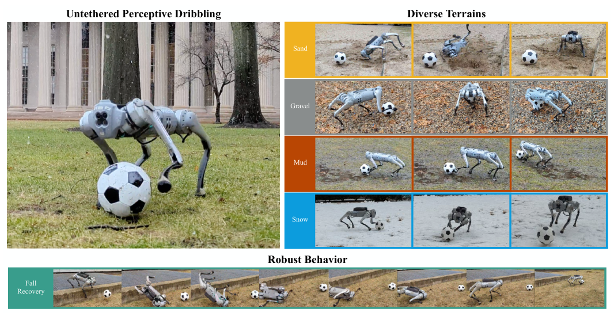
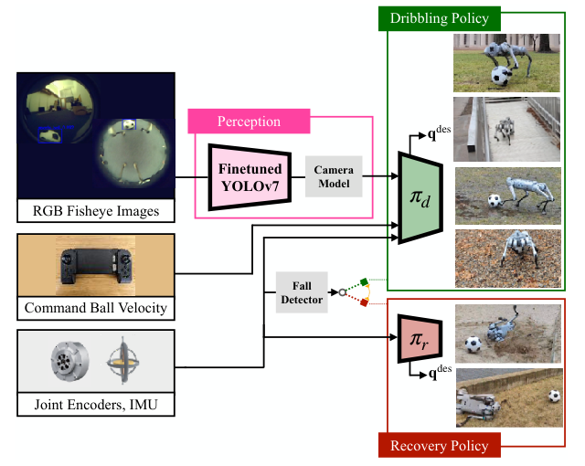
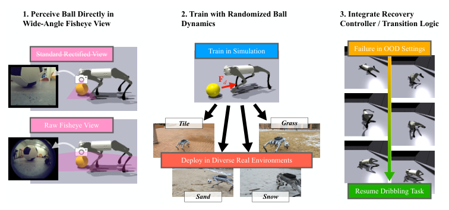
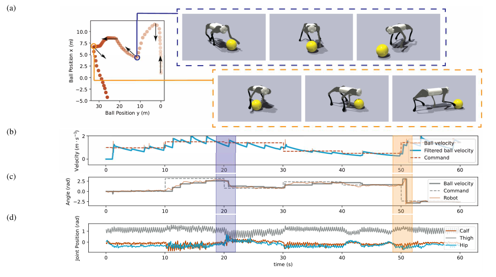
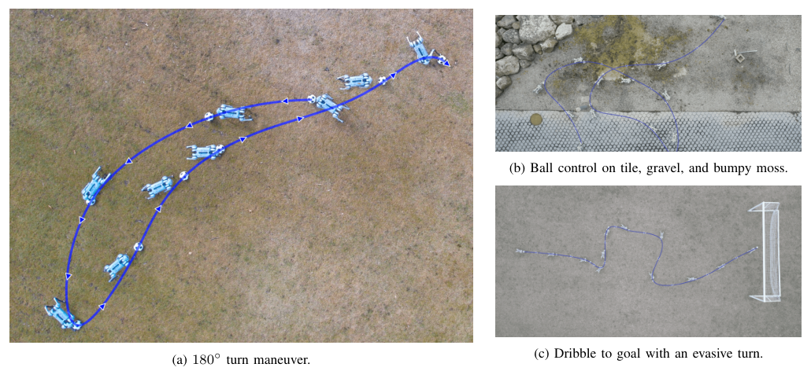

Background & Motivation
DribbleBot 讓一台 40 cm 高的 Unitree Go1 四足機器人,只靠機身上的兩顆 210° 魚眼相機與板載 Jetson 運算,在沙地、碎石、泥地、雪地、草地上邊跑邊盤帶足球(in-the-wild,無 tether、無外部相機)。核心是一條在 Isaac Gym 以 PPO 訓練、以「全域座標下的球速」為指令的全身控制策略;再用三招跨越 sim-to-real:在魚眼影像上微調 YOLOv7 找球、隨機化球–地面拖曳模型、跌倒後自動起身的 recovery policy。
DribbleBot lets a 40 cm-tall Unitree Go1 quadruped dribble a soccer ball while running across sand, gravel, mud, snow and grass, using only two body-mounted 210° fisheye cameras and onboard Jetson compute (in the wild: no tether, no external cameras). The core is a whole-body policy trained with PPO in Isaac Gym and commanded by the ball velocity in the global frame; three measures bridge sim-to-real: a YOLOv7 ball detector fine-tuned on fisheye images, a randomized ball-terrain drag model, and a recovery policy that stands the robot back up after a fall.

如果只有 30 秒In 30 seconds
- 問題 — 動態移動操作(dynamic mobile manipulation)要同時解決視覺感知、動態運動與物體操作。先前的四足足球研究不是在平滑場地、就是靠室內外部相機/動捕,或只做「推球」與「球停下才踢」的靜態盤帶。
- Problem — Dynamic mobile manipulation couples visual perception, dynamic locomotion and object manipulation. Prior legged-soccer work used flat smooth fields, indoor external cameras / mocap, or only pushed the ball with the body / did static dribbling where the ball stops before each kick.
- 方法 — 策略 \(\mathbf a_t=\pi_d(\mathbf o_t,\mathbf c_t)\) 在模擬中吃真值球位置(加雜訊、延遲、瞬移)與 15 步本體感知歷史,指令 \(\mathbf c_t\) 是全域座標的目標球速;部署時球位置改由微調 YOLOv7 + 魚眼等距模型估出;球拖曳 \(F_D=C_Dv^2\) 隨機化;跌倒時 FSM 切到 recovery policy。
- Method — The policy \(\mathbf a_t=\pi_d(\mathbf o_t,\mathbf c_t)\) sees the ground-truth ball position in sim (with noise, delay, teleports) plus a 15-step proprioceptive history; the command \(\mathbf c_t\) is a target ball velocity in the global frame. At deployment the ball position comes from a fine-tuned YOLOv7 + equidistant fisheye model; ball drag \(F_D=C_Dv^2\) is randomized; on a fall, an FSM hands control to a recovery policy.
- 結果 — 模擬中可追蹤最高 1.5 m/s 的盤帶速度與最多 180° 的瞬間轉向指令;真機腳本測試在磁磚、草地、沙地 4/4、雪地 3/4、路緣下階 2/4、斜坡 0/4;拿掉 YOLO 微調則所有地形 0/4。
- Results — In sim it tracks dribbling speeds up to 1.5 m/s and instantaneous command-direction changes up to 180°. On hardware, scripted trials succeed 4/4 on tile, grass and sand, 3/4 on snow, 2/4 on a curb step-down and 0/4 on a ramp; without YOLO fine-tuning it scores 0/4 on every terrain.
領域脈絡Field context
到 2023 年,模擬中訓練 RL、零樣本轉移到真機已經是四足運動的主流配方:樓梯、登山步道、沙地、泥地都能走([2]–[11],含同實驗室的 Rapid Locomotion 與 Walk These Ways);同一套配方也在靈巧手內操作上成功([12]–[15])。作者問的是:這套配方能否延伸到「邊跑邊操作物體」的動態移動操作?
By 2023, training RL in simulation and transferring zero-shot to hardware was the dominant recipe for quadruped locomotion—stairs, hiking trails, sand, mud ([2]–[11], including this lab's Rapid Locomotion and Walk These Ways); the same recipe also worked for dexterous in-hand manipulation ([12]–[15]). The authors ask: can it be extended to dynamic mobile manipulation—manipulating an object while running?
足球盤帶是一個好的案例:它需要whole-body control——同一組腿既要支撐平衡、又要追球、又要在對的時機施加對的踢力。RoboCup 早期多用規則式踢球;近期學習式方法多半在模擬、或在裝了外部相機的室內實驗室完成(如 [22] 的射門、[23] 的守門、[21] 的模仿學習靜態盤帶)。
Soccer dribbling is a good case study: it needs whole-body control—the same legs must balance, pursue the ball and apply the right kick at the right moment. Early RoboCup used rule-based kicking; recent learned approaches mostly live in simulation or in instrumented indoor labs with external cameras (e.g. shooting in [22], goalkeeping in [23], imitation-learned static dribbling in [21]).
這是一篇系統論文:沒有新的 RL 演算法(就是 PPO + MLP),貢獻在於辨認出「運動+操作」這個組合任務特有的 sim-to-real 缺口(球的動力學、近距離感知、跌倒後失球),並為每個缺口找到最便宜但有效的補丁。讀的時候要問的不是「新在哪個公式」,而是「哪些工程選擇才是真正必要的」——而論文的消融正好回答了一部分。
This is a systems paper: no new RL algorithm (it is PPO + MLP). The contribution is identifying the sim-to-real gaps specific to the locomotion + manipulation combination (ball dynamics, close-range perception, losing the ball after a fall) and patching each with the cheapest effective fix. The question to ask is not "which new equation" but "which engineering choices were actually necessary"—and the ablation partly answers that.
核心洞見 · KEY INSIGHTSKEY INSIGHTS
值得帶走的不是「機器狗會踢球」這個 demo,而是底下這幾個設計觀念:
The takeaway is not the "robot dog plays soccer" demo but these design ideas:
- 指令下給「物體」,不是給「身體」。 介面是球在全域座標的 2D 速度,而不是身體速度或步態參數。踢、追、轉身對位、掉球後折返等行為都不必手寫,由 RL 自己湧現。
- Command the object, not the body. The interface is the ball 2D velocity in the global frame, not body velocity or gait parameters. Kicking, chasing, re-orienting and doubling back after losing the ball are never scripted—they emerge from RL.
- 感知與控制解耦,各自跨 sim-to-real。 策略只吃「球的 3D 位置」(模擬中用真值+雜訊/延遲/瞬移);影像問題全交給一個在真實魚眼影像上監督微調的偵測器。避免了在模擬中渲染魚眼影像的慢與 visual gap。
- Decouple perception from control; bridge each gap separately. The policy only consumes the ball 3D position (ground truth + noise / delay / teleports in sim); all image issues go to a detector fine-tuned with supervision on real fisheye images. This avoids slow fisheye rendering and the visual sim-to-real gap.
- 物體–地形動力學是另一條獨立的隨機化軸。 球輕、是滾動接觸,所以球在草地/柏油上的減速跟腳的打滑無關;要另外隨機化球的拖曳、質量與速度擾動,不能只靠既有的機器人動力學隨機化。
- Object-terrain dynamics are a separate randomization axis. The ball is light and rolls, so its deceleration on grass vs pavement is unrelated to foot slip; ball drag, mass and velocity perturbations must be randomized on top of the usual robot-dynamics randomization.
- 最脆弱的一環是感知,而且便宜就能補。 只用 254 張手標魚眼影像微調 YOLOv7,就從所有地形 0/4 變成 4/4——是整個消融中影響最大的一項。
- Perception is the weakest link—and cheap to fix. Fine-tuning YOLOv7 on just 254 hand-labeled fisheye images moves success from 0/4 to 4/4 on every terrain—the largest effect in the ablation.
- 模組化安全網延伸工作範圍。 主策略只在平地訓練;超出分佈時用另一條在惡劣地形訓練的 recovery policy + 帶遲滯的狀態機接手,讓「跌倒」不必等於「任務失敗」。
- A modular safety net extends the operating envelope. The main policy trains on flat ground only; out of distribution, a separate recovery policy trained on harsh terrain plus a hysteretic state machine takes over, so a fall need not mean task failure.
- 操作任務蓋在運動「堆疊」之上。 步態時序變數、步態獎勵、PD 增益、actuator network、PPO 超參數幾乎全部沿用 Walk These Ways;換掉的主要是指令介面與任務獎勵。[導讀補充]
- Manipulation built on a locomotion stack. Gait timing variables, gait rewards, PD gains, the actuator network and PPO hyperparameters are almost all inherited from Walk These Ways; what changes is mainly the command interface and task rewards. [guide note]
Problem Diagnosis
現況 vs 痛點Status quo vs pain points
| 現有做法Existing approach | 它的痛點Its pain point |
|---|---|
| 規則式 RoboCup 足球Rule-based RoboCup soccer [17]–[19] | 平坦光滑場地,不需處理地形變化;多半是用身體推球,而非邊跑邊踢。Flat, smooth fields with no terrain variation; often pushing the ball with the body rather than kicking while running. |
| 靜態盤帶Static dribbling [20]–[22] | 球每次停下才踢下一腳,不是運動與踢球同時進行;[21] 用模仿學習 + 動捕輔助。The ball comes to rest before each kick; locomotion and kicking are not simultaneous. [21] uses imitation learning assisted by motion capture. |
| 實驗室 RL 足球技能Lab RL soccer skills [22] shooting · [23] goalkeeping | 依賴多台室內靜態外部相機,繞過了板載視覺的雜訊與光照問題;一次只學單一技能。Rely on multiple static external cameras indoors, bypassing noisy onboard vision and lighting variation; one skill at a time. |
| 模擬角色足球Simulated-character soccer [38], [40], [42], [44] | 不在實體機器人上;[44] 的盤帶等低階技能依賴人類動捕資料,四足形態沒有。Not on physical robots; low-level skills like dribbling in [44] depend on human mocap data, which does not exist for quadrupeds. |
| 四足 + 機械臂Quadruped + mounted arm [49]–[51] | 需要額外手臂硬體;研究的是互補的移動操作子問題,不是用腿本身做高動態操作。Need an extra arm; they study complementary mobile-manipulation subproblems rather than highly dynamic manipulation with the legs themselves. |
核心問題:能否把「模擬 RL → 真機」的配方,推到一個需要同時做運動、操作、板載感知的戶外動態任務上?
The core question: can the "RL in sim → real robot" recipe be pushed to an outdoor dynamic task that needs simultaneous locomotion, manipulation and onboard perception?
Gap 表 — 盤帶「進野外」的獨特難處,與 DribbleBot 的補法Gap table — what makes in-the-wild dribbling hard, and how DribbleBot patches it
| 挑戰Challenge | 為何難Why it is hard | DribbleBot 的補法DribbleBot fix |
|---|---|---|
| 球–地面動力學Ball-terrain dynamics | 球輕、滾動接觸,隨地形獨立變化:柏油上球滾得比狗跑得快;草地上球很快停下,要更頻繁更用力踢。剛體模擬器不模擬這種滾動阻力。Light ball, rolling contact, varying independently with terrain: on pavement it outruns the robot; on grass it slows quickly and needs frequent, stronger kicks. The rigid-body simulator does not model this rolling drag. | 自訂拖曳模型 \(F_D=C_Dv^2\),隨機化 \(C_D\)、球質量、球速擾動。Custom drag model \(F_D=C_Dv^2\); randomize \(C_D\), ball mass and velocity perturbations. |
| 近距離看球Seeing a close ball | 球可能離機身只有 10 cm;RealSense 類深度相機視野僅 105°,只看得到球的一小塊。在模擬中渲染魚眼影像則又慢、gap 又大。The ball can be 10 cm from the body; RealSense-type depth cameras have a 105° FOV and see only a sliver of it. Rendering fisheye images in sim is slow and has a large gap. | 前向 + 下向兩顆 210° 魚眼;YOLOv7 在 254 張魚眼影像上微調,等距模型換算 3D 位置;策略在模擬中吃帶雜訊的真值。Forward + downward 210° fisheyes; YOLOv7 fine-tuned on 254 fisheye images, equidistant model to 3D position; the policy trains on noisy ground truth. |
| 分佈外地形 → 跌倒 → 失球OOD terrain → fall → ball lost | 盤帶策略只在平地訓練(地形隨機化會讓盤帶變得不可行);遇到陡路緣就可能摔倒。The dribbling policy trains on flat ground only (terrain randomization made dribbling infeasible); a steep curb can topple it. | 在更惡劣地形訓練的 recovery policy + 依 roll/pitch 切換的有限狀態機。A recovery policy trained on harsher terrain + a finite-state machine switching on roll/pitch. |
| 指令介面Command interface | 盤帶很難用身體速度或步態參數表達,對人類操作者也不直觀;機器人與球的局部座標在踢球時快速變化。Dribbling is hard to express as body-velocity or gait commands and unintuitive for a human operator; the robot and ball local frames change rapidly during kicks. | 直接下全域座標的球速指令(以第一個時間步的機身座標為全域座標)。Command the ball velocity in the global frame (the body frame at the first time step). |
| 板載運算Onboard compute | Go1 的運算、通訊頻寬、電力都有限。Go1 has limited compute, bandwidth and power. | 每顆 Jetson Xavier NX 各自處理全解析度影像(TensorRT,400×480 @ 30 Hz),只傳球位置給跑策略的電腦。Each Jetson Xavier NX processes full-resolution images locally (TensorRT, 400×480 @ 30 Hz) and sends only ball positions to the policy computer. |
注意作者刻意不做端到端視覺 RL:理由是模擬慢、高維觀測樣本效率差、影像 sim-to-real gap 大。這是一個務實的切法——把「看」變成一個可以用 254 張圖監督學好的子問題,把「控制」留在乾淨的低維狀態上學。代價是:策略對球以外的環境完全無感(不知道牆、柱子、坡),這在 Discussion 也被列為限制。
Note the authors deliberately avoid end-to-end visual RL: slow simulation, poor sample efficiency from high-dimensional observations, and a large image sim-to-real gap. It is a pragmatic split—"seeing" becomes a subproblem learnable from 254 supervised images, while "control" is learned on clean low-dimensional state. The price: the policy is blind to everything except the ball (walls, poles, slopes), which the Discussion lists as a limitation.
Core Method
總覽:狀態式策略 + 獨立的視覺模組Overview: a state-based policy + a separate vision module
在模擬中訓練盤帶策略,再轉移到真機:
The dribbling policy is trained in simulation and transferred to hardware:
\(\mathbf o_t\) 包含本體感知與球位置 \(\mathbf b_t\);\(\mathbf c_t\) 是人類操作者給的球速指令。模擬中 \(\mathbf b_t\) 直接取真值;真機上由另外訓練的偵測模型 \(\mathbf Y\) 從板載相機影像 \(\mathbf o^v_t\) 估出 \(\hat{\mathbf b}_t\)。動作 \(\mathbf a_t\) 是 12 顆馬達(每腿 3 顆)的關節位置目標,頻率 50 Hz,以 PPO 訓練。
\(\mathbf o_t\) contains proprioception and the ball position \(\mathbf b_t\); \(\mathbf c_t\) is the ball-velocity command from a human operator. In sim \(\mathbf b_t\) is ground truth; on hardware a separately trained detector \(\mathbf Y\) estimates \(\hat{\mathbf b}_t\) from onboard images \(\mathbf o^v_t\). The action \(\mathbf a_t\) is the joint position target for the 12 motors (3 per leg) at 50 Hz; training uses PPO.

環境設計與指令介面Environment design and command interface
模擬在 Isaac Gym(廠商 URDF),單張 RTX 3090 完成模擬與訓練。每個 episode 40 s、控制 50 Hz;開場時機器人 yaw 隨機、腿部姿態在標稱姿態附近隨機、球隨機放在機器人 2 m 內、目標球速均勻隨機——以學會全方向的運動與盤帶。地面是平地,物理參數隨機化。
Simulation runs in Isaac Gym (manufacturer URDF); simulation and training fit on one RTX 3090. Episodes last 40 s at 50 Hz control. At reset the robot yaw is random, leg positions are randomized around a nominal pose, the ball is placed randomly within 2 m, and the target ball velocity is uniformly random—so the robot learns omnidirectional locomotion and dribbling. The ground is flat, with randomized physical parameters.
指令 = 球在 2D 地面上的線速度,表達在全域座標系。為什麼不用機身座標或球的座標?球是全旋轉對稱的,而機器人在踢球時朝向變化很快,兩者的局部座標都在劇烈變動,對人類操作者沒有意義。全域座標定義為第一個時間步的機身座標,所以策略必須知道自己在全域座標的朝向——觀測裡因此加入 IMU 的全域 yaw \(\psi_t\)。
Command = the ball linear velocity on the 2D ground plane, expressed in the global frame. Why not the body or ball frame? The ball is rotationally symmetric and the robot heading changes quickly while kicking, so both local frames churn and mean little to a human operator. The global frame is the body frame at the first time step, so the policy must know its own global heading—hence the IMU global yaw \(\psi_t\) in the observation.
觀測與動作空間Observation and action spaces
觀測是 15 步歷史的堆疊,每步 37 維:
The observation stacks a 15-step history, 37 dimensions per step:
\(\mathbf c=(v^{\text{cmd}}_x,v^{\text{cmd}}_y)\) 是全域球速指令;\(\mathbf b\) 是機身座標下的球位置;\(\mathbf q,\dot{\mathbf q}\) 是關節角與角速度;\(\mathbf g\) 是機身座標下的重力單位向量;\(\psi\) 是全域 yaw;\(\boldsymbol\theta^{\text{cmd}}\) 是沿用自 Walk These Ways 的步態時序參考變數(4 維時鐘)。動作是 12 個關節的目標位置,由高頻 PD 控制器追蹤:
\(\mathbf c=(v^{\text{cmd}}_x,v^{\text{cmd}}_y)\) is the global ball-velocity command; \(\mathbf b\) the ball position in the body frame; \(\mathbf q,\dot{\mathbf q}\) joint angles and velocities; \(\mathbf g\) the gravity unit vector in the body frame; \(\psi\) the global yaw; \(\boldsymbol\theta^{\text{cmd}}\) the gait timing reference variables inherited from Walk These Ways (a 4-D clock). Actions are 12 joint position targets tracked by a high-rate PD controller:
[導讀補充] PD 力矩式是標準寫法,論文只給增益值。37 = 2+3+12+12+3+1+4 是導讀依 Table II 的維度加總,與論文標註的 37×15 吻合。
[guide note] The PD torque law is the standard form; the paper gives only the gains. 37 = 2+3+12+12+3+1+4 is the guide author's sum of the Table II dimensions, matching the paper's stated 37×15.
獎勵:乘法式組合Rewards: a multiplicative composition
總獎勵沿用 [34] 的形式,正向任務獎勵乘上負向懲罰的指數:
The total reward follows the form of [34]: positive task reward times the exponential of the negative penalties:
[導讀補充] 懲罰只能把任務獎勵「打折」到 \((0,1]\) 倍,不會讓總獎勵變負——避免策略學到「早點結束 episode 比較划算」。這與 Walk These Ways 的 \(r_{\text{task}}\exp(c_{\text{aux}}r_{\text{aux}})\) 是同一精神。
[guide note] Penalties can only discount the task reward by a factor in \((0,1]\), never make the total negative—so the policy is not tempted to end episodes early. Same spirit as Walk These Ways' \(r_{\text{task}}\exp(c_{\text{aux}}r_{\text{aux}})\).
| 項目Term | 式子Expression | 權重Weight |
|---|---|---|
| 投影球速追蹤Projected ball velocity | \(\exp\{-\delta_v\|\mathbf v_b-\mathbf v^{\text{cmd}}\|^2\}\) | 0.5 |
| 機器人–球距離Robot-ball distance | \(\exp\{-\delta_p\|\mathbf b-\mathbf p_{\text{FRHip}}\|^2\}\) | 4.0 |
| 朝向對齊Yaw alignment | \(\exp\{-\delta_\psi(e^2_{\text{rbcmd}}+e^2_{\text{rbbase}})\}\) | 4.0 |
| 球速大小Ball velocity norm | \(\exp\{-\delta_n(\|\mathbf v^{\text{cmd}}\|-\|\mathbf v_b\|)^2\}\) | 4.0 |
| 球速方向Ball velocity angle | \(1-(\psi_b-\psi^{\text{cmd}})^2/\pi^2\) | 4.0 |
| 擺動相時程Swing phase schedule | \([1-\kappa]\exp\{-\delta_{cf}\|\mathbf f^{\text{foot}}\|^2\}\) | 4.0 |
| 支撐相時程Stance phase schedule | \(\kappa\exp\{-\delta_{cv}\|\mathbf v^{\text{foot}}_{xy}\|^2\}\) | 4.0 |
| 關節極限Joint limit violation | \(\mathbf 1_{\,q_i\gt q_{\max}\,\lor\,q_i\lt q_{\min}}\) | \(-10\) |
| 關節力矩 / 速度 / 加速度Joint torque / vel / acc | \(\|\boldsymbol\tau\|^2,\ \|\dot{\mathbf q}\|,\ \|\ddot{\mathbf q}\|\) | \(-10^{-4},-10^{-4},-2.5\!\times\!10^{-7}\) |
| 髖/大腿碰撞Hip/thigh collision | \(\mathbf 1_{\text{collision}}\) | \(-5\) |
| 投影重力(保持水平)Projected gravity (stay level) | \(\|\mathbf g_{xy}\|^2\) | \(-5\) |
| 動作平滑 1 / 2Action smoothing 1 / 2 | \(\|\mathbf a_{t-1}-\mathbf a_t\|^2,\ \|\mathbf a_{t-2}-2\mathbf a_{t-1}+\mathbf a_t\|^2\) | \(-0.1,-0.1\) |
讀法:任務獎勵分成三類——(1) 追蹤指令球速(向量誤差、大小、方向各一項);(2) shaping:讓機器人靠近球(以右前髖為錨點)並面向球,因為相機視野有限,要鼓勵球留在畫面中;(3) 沿用 WTW 的擺動/支撐相時程(\(\kappa\) 是期望接觸狀態 \(C^{\text{cmd}}_{\text{foot}}(\boldsymbol\theta^{\text{cmd}},t)\)),讓步態成形。其餘是標準安全懲罰。\(e_{\text{rbcmd}}\) 是「機器人→球」向量與 \(\psi_b\) 的夾角,\(e_{\text{rbbase}}\) 是機身 yaw 與 \(\psi_b\) 的夾角。
Reading guide: task rewards fall into three groups—(1) tracking the commanded ball velocity (vector error, magnitude and direction terms); (2) shaping: stay close to the ball (anchored at the front-right hip) and face the ball, since the camera FOV is limited and the ball should stay in view; (3) WTW-style swing/stance schedules (\(\kappa\) is the desired contact state \(C^{\text{cmd}}_{\text{foot}}(\boldsymbol\theta^{\text{cmd}},t)\)) so gaits are well formed. The rest are standard safety penalties. \(e_{\text{rbcmd}}\) is the angle between the robot-to-ball vector and \(\psi_b\); \(e_{\text{rbbase}}\) the angle between the base yaw and \(\psi_b\).
感知:直接在魚眼畫面上找球Perception: find the ball directly in the fisheye view

size-3 足球直徑 18 cm,可能貼近到離機身 10 cm。魚眼校正(rectification)會把球嚴重扭曲,所以網路上窄視角影像預訓練的模型直接用效果不好;作者在 254 張手標魚眼影像(含球在畫面邊緣的情況)上微調 COCO 預訓練的 YOLOv7,資料增強只用水平翻轉、15° 內旋轉與模糊,就在整個視野恢復良好偵測。
A size-3 ball is 18 cm in diameter and can come within 10 cm of the body. Rectifying the fisheye heavily warps the sphere, so off-the-shelf detectors trained on narrow-view internet images do poorly. Fine-tuning a COCO-pretrained YOLOv7 on 254 hand-labeled fisheye images (including balls at the image edge), with only horizontal flips, rotations up to 15° and blur as augmentation, recovers good detection across the whole field of view.
bounding box 到 3D 位置用近似的等距(equidistant)魚眼模型:像素到影像中心的距離 \(r\) 與入射角 \(\theta\) 成正比,球的像素尺寸 \(\Delta r\) 與已知半徑 \(R\) 給出距離 \(z\)(忽略扭曲):
From bounding box to 3D position, an approximate equidistant fisheye model is used: the pixel distance from the image center \(r\) is proportional to the incidence angle \(\theta\), and the ball pixel size \(\Delta r\) with the known radius \(R\) gives the range \(z\) (ignoring warping):
方向(由 \(\theta\) 與像素方位角 \(\phi\))加上距離即得相機座標下的球位置,再用已知外參轉到機身座標;兩顆相機都看到時,取信心值較高的那個(不做融合)。[導讀補充] 寫成式子即
Direction (from \(\theta\) and the pixel azimuth \(\phi\)) plus range gives the ball position in the camera frame, then known extrinsics map it to the body frame; if both cameras see it, the higher-confidence detection wins (no fusion). [guide note] Written out:
縮小 sim-to-real 差距的其他措施Other measures that shrink the sim-to-real gap
1) 視覺雜訊模型。訓練時在球位置上加均勻分佈雜訊;每 7.0 s 把球瞬移到 1.0 m 內的隨機位置(模擬人把球踢走或球出視野);相機延遲以 Poisson 過程模擬下一幀到達時間,平均到達時間每個 episode 在 20–60 ms 間隨機。
1) Vision noise model. During training, uniform noise is added to the ball position; every 7.0 s the ball is teleported to a random spot within 1.0 m (emulating a human kicking it away or it leaving the FOV); camera delay is modeled as a Poisson arrival process with mean arrival time randomized per episode between 20 and 60 ms.
2) 機器人系統辨識。(a) 用真實力矩資料訓練 actuator network 模擬非理想馬達;(b) 辨識並建模「觀測量測 → 動作施加」之間的延遲。兩者都是 WTW 等前作的標準做法。
2) Robot system identification. (a) An actuator network trained on real torque data models non-ideal motors; (b) the lag between observation and action application is identified and modeled. Both are standard in WTW and other prior work.
3) 球–地面互動模型。剛體模擬器不模擬滾動接觸的可變阻力,作者加了一個與速度平方成正比的拖曳力(借用空氣阻力的標準形式),以不同 \(C_D\) 模擬高草(高 \(C_D\))到柏油(低 \(C_D\)):
3) Ball-terrain interaction model. The rigid-body simulator does not model variable rolling-contact drag, so the authors add a drag force proportional to velocity squared (borrowing the standard aerodynamic form), with different \(C_D\) emulating tall grass (high \(C_D\)) to pavement (low \(C_D\)):
此外隨機改變球速(擾動 0–0.3 m/s),模擬人的介入或不平地面的碰撞。
Ball velocity is also randomly perturbed (0–0.3 m/s) to emulate human intervention or bumps on uneven terrain.
| 隨機化參數(Table IV)Randomized parameter (Table IV) | 範圍Range |
|---|---|
| 負載質量 / 馬達強度 / 關節校正Payload / motor strength / joint calibration | [−1, 3] kg · [90, 110]% · [−0.02, 0.02] rad |
| 機器人–地面摩擦 / 恢復係數Robot-terrain friction / restitution | [0.40, 1.00] · [0.00, 1.00] |
| 質心偏移Center-of-mass displacement | [−0.15, 0.15] m |
| 球質量 / 拖曳係數 / 速度擾動Ball mass / drag coeff. / velocity perturbation | [0.159, 0.254] kg · [0, 1.5] · [0, 0.3] m/s |
| 相機幀到達率 / 瞬移距離Camera frame arrival rate / teleport distance | [0.3, 0.7] · [0, 1.0] m |
| 指令 \(v^{\text{cmd}}_x, v^{\text{cmd}}_y\)Command \(v^{\text{cmd}}_x, v^{\text{cmd}}_y\) | [−1.5, 1.5] m/s |
| Perlin 地形高度 / 重力雜訊(僅 recovery)Perlin terrain height / gravity noise (recovery only) | [0, 10] cm · [−1, 1] \(\text{m/s}^2\) |
跌倒恢復策略與切換邏輯Fall-recovery policy and switching logic
recovery policy \(\pi_r\) 在比盤帶更惡劣的領域訓練:Perlin 雜訊不平地形、每 6.0 s 擾動重力向量模擬斜坡。先從不同姿態隨機丟下機器人,產生 1000 個初始跌倒姿態,再以身體朝向、身高、姿勢、腳高為獎勵訓練(\(g_z\) 是機身座標重力的垂直分量,直立時 \(g_z=-1\);\(\mathbb I=\mathbf 1_{g_z\lt -0.6}\) 表示只有接近直立時才給身高/姿勢/腳高獎勵):
The recovery policy \(\pi_r\) trains in harsher domains than dribbling: Perlin-noise rough terrain, and a gravity vector perturbed every 6.0 s to emulate slopes. Robots are first dropped from random orientations to build 1000 initial fall configurations, then trained with rewards on body orientation, height, pose and foot height (\(g_z\) is the vertical gravity component in the body frame, \(g_z=-1\) when upright; \(\mathbb I=\mathbf 1_{g_z\lt -0.6}\) gates the height/pose/foot rewards to near-upright states):
兩條策略之間用依機身朝向切換的有限狀態機:roll 或 pitch 大於 1.0 rad 視為運動失敗,切到 \(\pi_r\) 回到站姿;roll 與 pitch 都小於 0.5 rad 時重新啟用 \(\pi_d\)。[導讀補充] 兩個門檻之間的空隙就是遲滯(hysteresis),避免在邊界附近來回抖動切換:
The two policies are joined by a finite-state machine keyed on body orientation: roll or pitch above 1.0 rad signals locomotion failure and hands over to \(\pi_r\) to return to standing; once both roll and pitch are below 0.5 rad, \(\pi_d\) is reactivated. [guide note] The gap between the two thresholds is hysteresis, preventing chattering near the boundary:
網路與最佳化Network and optimization
策略是三層 MLP [512, 256, 128],PPO 訓練 70 億 timesteps(約 48 小時)收斂,4096 個平行環境;PPO 超參數(\(\gamma=0.99\)、GAE \(\lambda=0.95\)、clip 0.2、lr \(10^{-3}\)、每次 rollout 21 步、5 epochs、4 minibatches、entropy 0.01)與 WTW 訓練此機器人的設定相同,盤帶與 recovery 共用。另有一個兩層 [256, 128] 的回歸網路,從 \(\mathbf o_t\) 預測機身速度、球速、球–地面拖曳係數(做法同 [34]),預測值也接到策略輸入——但作者坦言沒有評估它對 sim-to-real 的影響,主要用於視覺化與除錯。
The policy is a three-layer MLP [512, 256, 128], trained by PPO and converging after 7 billion timesteps (about 48 hours) on 4096 parallel environments. PPO hyperparameters (\(\gamma=0.99\), GAE \(\lambda=0.95\), clip 0.2, lr \(10^{-3}\), 21 steps per rollout, 5 epochs, 4 minibatches, entropy 0.01) are the same settings WTW used on this robot, shared by dribbling and recovery. A separate two-layer [256, 128] regressor predicts body velocity, ball velocity and the ball-terrain drag coefficient from \(\mathbf o_t\) (as in [34]), and its outputs are appended to the policy input—but the authors admit they did not evaluate its effect on sim-to-real; it mainly serves visualization and debugging.
符號白話對照Symbols in plain words
| \(\pi_d,\ \pi_r\) | 盤帶策略 / 跌倒恢復策略(兩者都是 RL 訓練的 MLP)。Dribbling policy / recovery policy (both RL-trained MLPs). |
| \(\mathbf Y\) | 微調後的 YOLOv7 球偵測器。The fine-tuned YOLOv7 ball detector. |
| \(\mathbf c_t=\mathbf v^{\text{cmd}}\) | 人給的目標球速(2D,全域座標)。Human-given target ball velocity (2D, global frame). |
| \(\mathbf b_t,\ \hat{\mathbf b}_t\) | 機身座標的球位置:模擬真值 / 視覺估計值。Ball position in the body frame: sim ground truth / visual estimate. |
| \(\mathbf v_b,\ \psi_b\) | 實際球速與其方向(全域座標)。Actual ball velocity and its direction (global frame). |
| \(\psi_t\) | IMU 給的全域 yaw,讓策略能解讀全域指令。Global yaw from the IMU, letting the policy interpret global commands. |
| \(\boldsymbol\theta^{\text{cmd}},\ \kappa\) | 步態時鐘(承自 WTW)/ 由它算出的期望足部接觸狀態。Gait clock (from WTW) / the desired foot contact state derived from it. |
| \(\mathbf p_{\text{FRHip}}\) | 右前髖在機身座標的位置——「靠近球」獎勵的錨點。Front-right hip position in the body frame—the anchor of the "stay close" reward. |
| \(C_D\) | 球–地面拖曳係數:大 = 高草,小 = 柏油。Ball-terrain drag coefficient: large = tall grass, small = pavement. |
| \(f,\ \theta,\ \Delta r,\ R\) | 魚眼焦距、入射角、球的像素尺寸、球的實際半徑。Fisheye focal length, incidence angle, ball pixel size, physical ball radius. |
Experimental Evidence
模擬:盤帶控制的品質Simulation: quality of dribbling control
在與訓練相同的條件下評估。策略能追蹤最高 1.5 m/s 的盤帶速度,以及整個範圍(最多 180°)的瞬間方向變化。與一般運動不同,改變球速可能要好幾秒:機器人得先建立對球的控制、再連續踢好幾腳。
Evaluated under the same conditions as training. The policy tracks dribbling speeds up to 1.5 m/s and the entire range of instantaneous direction changes, up to 180°. Unlike ordinary locomotion, changing the ball velocity can take several seconds: the robot must first establish control of the ball and then execute multiple kicks.

作者據此主張盤帶需要任務導向的全身協調(whole-body control):同一條腿在左轉與右轉時扮演完全不同的角色(踢球 vs 穩定)。
From this the authors argue that dribbling needs task-oriented whole-body coordination: the same leg plays entirely different roles in left vs right turns (kicking vs stabilizing).
真機定量測試與消融(Table I,成功次數 / 4)Real-world quantitative test and ablation (Table I, successes / 4)
協定:全自主執行腳本軌跡——以 1.5 m/s 向前盤帶 10 s、停球 5 s、再以 1.5 m/s 帶回起跑線。失去對球的控制即算失敗;若因跌倒失球,允許自主起身後繼續。消融:-R 無 recovery controller;-Y 無 YOLO 微調;-D 訓練時無球拖曳模型。「–」表示未測。
Protocol: a fully autonomous scripted trajectory—dribble forward at 1.5 m/s for 10 s, stop the ball for 5 s, then return to the start line at 1.5 m/s. Losing control of the ball is a failure; if the loss is due to a fall, the robot may recover autonomously and continue. Ablations: -R no recovery controller; -Y no YOLO fine-tuning; -D no ball drag model in training. "–" means not tested.
| 地形Terrain | Full | -R | -Y | -D |
|---|---|---|---|---|
| 磁磚Tile | 4/4 | 4/4 | 0/4 | 4/4 |
| 草地Grass | 4/4 | 4/4 | 0/4 | 4/4 (較慢,僅影片)(slower, video only) |
| 沙地Sand | 4/4 | 4/4 | 0/4 | 2/4 |
| 雪地Snow | 3/4 | 3/4 | 0/4 | – |
| 路緣下階Curb step-down | 2/4 | 1/4 | – | – |
| 斜坡Ramp | 0/4 | 0/4 | – | – |
完整系統在磁磚、草地、沙地連續 4 次成功;雪地、下階、斜坡逐漸變難。下階與斜坡在訓練中從未出現,屬於分佈外地形。下階失敗:一次摔進雪堆後起不來,一次跌倒時把球踢遠、起身後看不到球。斜坡:遙控下能過,但預設腳本下球在兩腳之間滾回坡下,機器人得轉身回去撿。
The full system scores four consecutive successes on tile, grass and sand; snow, step-down and ramp are progressively harder. Step-down and ramp never appear in training—they are out-of-distribution terrain. Step-down failures: once the robot fell into a snow pile and failed to recover; once it knocked the ball far away as it fell and could not see it after recovering. Ramp: traversable under teleoperation, but with pre-specified commands the ball rolled back down between kicks and the robot had to turn around to fetch it.
消融怎麼讀Reading the ablation
| 拿掉什麼Removed | 代價Cost | 證明了什麼What it shows |
|---|---|---|
| -Y YOLO 微調YOLO fine-tuning | 四種地形全部 0/40/4 on all four terrains | 微調是整個系統最關鍵的一環;現成 COCO 偵測器在魚眼畫面上根本不堪用。這是唯一在每種地形都產生落差的消融。Fine-tuning is the single most critical component; an off-the-shelf COCO detector is unusable on fisheye images. The only ablation that hurts on every terrain. |
| -D 球拖曳模型ball drag model | 沙地 4/4 → 2/4;草地仍 4/4 但「明顯較慢」(僅影片)Sand 4/4 → 2/4; grass still 4/4 but "substantially slower" (video only) | 沙地的失敗都在轉彎時漏踢一腳後發生;作者推論拖曳模型帶來的魯棒性也幫助應對滑地等其他原因造成的意外球運動——這是推論,不是被隔離驗證的結論。Both sand failures follow a missed kick during a turn; the authors infer that the robustness from the drag model also helps with unexpected ball motion from other causes like slippery terrain—an inference, not an isolated test. |
| -R recovery 策略recovery policy | 只有路緣下階 2/4 → 1/4Only curb step-down 2/4 → 1/4 | 平地類地形幾乎沒有跌倒,所以 -R 不影響;它的價值只在困難地形顯現,且證據只有一次試驗的差距。Flat-ish terrains rarely cause falls, so -R changes nothing there; its value shows only on hard terrain, and the evidence is a one-trial difference. |
[導讀補充] 以 Fisher exact test 粗估:4/4 vs 0/4 的雙尾 \(p\approx 0.029\)(每種地形各自都勉強顯著,四種合起來則非常明確);4/4 vs 2/4 的 \(p\approx 0.43\);2/4 vs 1/4 的 \(p=1\)。也就是說,只有 -Y 的效果在統計上站得住,-D 與 -R 的差距在 \(n=4\) 下無法與隨機波動區分。
[guide note] A rough Fisher exact test: 4/4 vs 0/4 gives two-sided \(p\approx 0.029\) (barely significant per terrain, unambiguous pooled over four); 4/4 vs 2/4 gives \(p\approx 0.43\); 2/4 vs 1/4 gives \(p=1\). In other words, only the -Y effect is statistically solid; the -D and -R gaps cannot be told apart from chance at \(n=4\).
定性展示:大範圍、多地形、與人互動Qualitative demos: large spaces, many terrains, human play

遙控下在草地、柏油、碎石、雪、沙、凹凸地面都能完成盤帶與轉向:草地高拖曳讓球很快慢下;柏油低拖曳讓球容易跑掉;碎石上球滾但狗腳滑;雪與沙上球與狗都會滑;凹凸地面上球撞地後方向不可預測。與人互動時,機器人表現出長時間、非週期的行為——繞去追球、調整身體朝向準備踢、掉球後折返——全部未經明確設計。
Under teleoperation it dribbles and turns on grass, pavement, gravel, snow, sand and bumpy ground: high drag on grass slows the ball; low drag on pavement lets it run away; on gravel the ball rolls but the robot slips; on snow and sand both slip; on bumpy ground the ball changes direction unpredictably. When playing with a human, the robot shows extended aperiodic behaviors—circling to reach the ball, orienting the body for a kick, doubling back after losing it—none explicitly designed.
Critical Reading
可被質疑的點Contestable points
- 任務範圍很窄。 「dynamic legged manipulation」的標題遠大於實際任務:單一物體(一顆 size-3、黑白花紋的標準足球)、單一技能(依速度指令盤帶)、由人遙控或腳本給指令。沒有射門、沒有目標位置、沒有對手。能否推廣到其他物體(形狀不對稱、會翻滾的箱子)完全沒有證據。
- Narrow task scope. The title "dynamic legged manipulation" is far broader than the task: one object (a standard black-and-white size-3 soccer ball), one skill (velocity-commanded dribbling), with commands from a human or a script. No shooting, no goal positions, no opponent. There is no evidence about other objects (asymmetric shapes, boxes that tumble).
- 地形多樣性的主張大於證據。 盤帶策略只在平地訓練,球–地面差異只用一個標量 \(C_D\) 的二次拖曳表示(物理上更接近空氣阻力而非滾動阻力,見 METHOD 側欄);沙、雪等可變形地形對機器人足部的影響只靠摩擦/恢復係數隨機化。定量測試只涵蓋 6 種場景,泥地、碎石、苔蘚只有影片與空拍。
- Terrain-diversity claims exceed the evidence. The dribbling policy trains on flat ground only; ball-terrain variation is a single scalar \(C_D\) with quadratic drag (physically closer to air drag than rolling resistance; see the METHOD sidebar); deformable terrain like sand and snow affects the feet only through friction/restitution randomization. The quantitative test covers 6 scenes; mud, gravel and moss are video and drone footage only.
- 感知失效模式幾乎沒被量化。 整個系統押在 254 張影像微調出的偵測器上(-Y 全部 0/4),但論文沒報偵測率、誤檢率、3D 定位誤差隨距離/畫面位置的分佈。已知的失效:強烈直射陽光的眩光、跌倒後球出視野、高速時漏停球後失去視線。等距模型「忽略扭曲」的近似在畫面邊緣與 10 cm 近距離時誤差多大?兩相機取高信心者而非融合、沒有任何濾波器(只靠策略的 15 步歷史隱式平滑),遮擋(自己的腿、人的腳)與干擾物(其他球、圓形物)都沒討論。
- Perception failure modes are barely quantified. The whole system rests on a detector fine-tuned on 254 images (-Y is 0/4 everywhere), yet no detection rate, false-positive rate, or 3D localization error vs distance / image position is reported. Known failures: glare in bright direct sunlight, the ball leaving view after a fall, losing sight after a missed stop at speed. How large is the error of the "ignore warping" equidistant approximation at the image edge and at 10 cm? The two cameras are arbitrated by confidence rather than fused, with no filter (only implicit smoothing via the 15-step history); occlusion (own legs, human feet) and distractors (other balls, round objects) are not discussed.
- 沒有任何比較基準。 所有比較都是「拿掉自己的元件」。缺少的關鍵 baseline 包括:現成運動控制器(如 WTW)+ 手寫「追球/推球」高階邏輯——這能直接回答「是否真的需要學一條全身盤帶策略」;或用身體速度指令的分層方法(類似 [22] 的設計)。沒有這些,「whole-body control 是必要的」只是由 Fig.4d 的腿部動作圖支撐的論述。
- No external baseline at all. Every comparison removes one of the system's own components. Missing key baselines: an off-the-shelf locomotion controller (e.g. WTW) + a scripted "chase / push the ball" high-level layer—which would directly test whether a learned whole-body dribbling policy is needed—or a hierarchical body-velocity design like [22]. Without them, "whole-body control is necessary" is an argument supported only by the leg-motion plot of Fig.4d.
- 統計力不足、指標粗糙。 每格 4 次、單一腳本軌跡、二元成功率、多格未測(「–」)。-D 在草地「明顯較慢」只在影片裡,沒有數字;模擬結果只展示一段 60 s 的軌跡,沒有跨種子、跨指令的彙總統計。
- Low statistical power, coarse metrics. Four trials per cell, one scripted trajectory, binary success, several untested cells ("–"). The -D slowdown on grass exists only in the video, with no number; the simulation results show a single 60 s trajectory with no aggregate statistics across seeds or commands.
- 可復現的細節缺漏。 獎勵中的 \(\delta\) 尺度、視覺雜訊的均勻分佈範圍、盤帶時使用的步態/步頻都未給;相機延遲在文中寫「平均 20–60 ms」,表中卻是「幀到達率 0.3–0.7」[導讀補充] 若把到達率解讀為每個 20 ms 控制步的到達機率,對應平均間隔約 29–67 ms,與文中數字不完全一致。速度/拖曳估計器接到策略輸入,但其影響未評估。
- Missing reproducibility details. The reward \(\delta\) scales, the range of the uniform vision noise, and the gait / stepping frequency used while dribbling are not given; camera delay is "mean 20–60 ms" in the text but "frame arrival rate 0.3–0.7" in the table [guide note] reading the rate as the per-20-ms-step arrival probability implies mean intervals of about 29–67 ms, not quite matching the text. The velocity/drag estimator feeds the policy, but its effect is not evaluated.
- 全域座標指令的隱藏假設。 [導讀補充] 全域座標 = 第一步的機身座標,方向靠 IMU 的 yaw 維持;長時間運行下 yaw 漂移會讓「向北帶球」慢慢變成「向東北」。對短程 demo 無妨,對真正的長程任務(送貨、比賽)就是問題,論文未討論。
- A hidden assumption in global-frame commands. [guide note] The global frame is the first-step body frame, maintained through IMU yaw; over long runs yaw drift would slowly turn "dribble north" into "dribble north-east." Harmless for short demos, a real issue for long-horizon tasks (delivery, matches); not discussed.
給讀書會 / 審稿的犀利問題Sharp questions for a reading group / review
- 拖曳模型在做什麼? 把 \(C_Dv^2\) 換成定值減速的滾動阻力模型,或只把球速擾動範圍加大,沙地與草地的結果會變嗎?\(C_D\) 隨機化是在模擬「地形」,還是只是一般性的「球動力學魯棒性」?
- What is the drag model really doing? If \(C_Dv^2\) were replaced by constant-deceleration rolling resistance, or the ball-velocity perturbation range were simply widened, would sand and grass results change? Does \(C_D\) randomization model "terrain," or just generic "ball-dynamics robustness"?
- 感知誤差預算。 \(z\approx fR/\Delta r\) 在畫面邊緣、球貼近 10 cm 時的定位誤差是多少?策略能容忍多大的定位誤差與延遲,超過後成功率如何下降?
- Perception error budget. What is the localization error of \(z\approx fR/\Delta r\) at the image edge and at 10 cm? How much localization error and delay can the policy tolerate, and how does success decay beyond it?
- 學全身盤帶是必要的嗎? 「WTW 運動控制器 + 手寫追球邏輯」在同一腳本軌跡上能拿幾分?如果也能 4/4,本文的貢獻就主要在感知與系統整合,而非控制。
- Is learning whole-body dribbling necessary? How would "WTW locomotion + scripted ball-chasing" score on the same scripted trajectory? If it also gets 4/4, the contribution is mainly perception and system integration, not control.
- 樣本數夠嗎? 以 \(n=4\),-D 在沙地的 4/4 vs 2/4 與 -R 在路緣的 2/4 vs 1/4 都不顯著;作者的結論在多少次試驗後才站得住?
- Is the sample size enough? With \(n=4\), neither -D on sand (4/4 vs 2/4) nor -R on the curb (2/4 vs 1/4) is significant; how many trials would the conclusions need?
- 為何指令是速度而非目標位置? 對「帶到球門前」這類目標導向任務,有數秒延遲的速度指令需要人在迴路中修正;改成位置/航點指令會更好嗎?
- Why velocity commands rather than goal positions? For goal-directed tasks like "dribble to the goal," a velocity command with seconds of lag needs a human in the loop to correct it; would position / waypoint commands work better?
- 左右是否對稱? 「靠近球」錨定在右前髖,左轉與右轉的成功率與延遲是否不同?
- Is it left-right symmetric? With "stay close" anchored at the front-right hip, do left and right turns differ in success rate and lag?
Takeaways
對你研究的啟發Implications for your research
- 物體中心的指令介面:做移動操作時,讓指令描述「物體該怎麼動」而不是「身體該怎麼動」,可以讓 RL 自己發現接觸策略(踢、推、夾、繞)。這也是「腿可以當操作器」路線的核心想法。
- Object-centric command interfaces: in mobile manipulation, letting commands describe "how the object should move" rather than "how the body should move" lets RL discover contact strategies (kick, push, trap, circle) on its own—the core idea of the "legs as manipulators" line of work.
- 特權狀態訓練 + 真實資料微調感知是很划算的 sim-to-real 切法:策略用低維狀態學、對狀態估計加入雜訊/延遲/消失;感知用少量真實影像監督學。先問「控制需要的是什麼狀態」,再決定感知要多強。
- Privileged-state training + real-data perception fine-tuning is a cost-effective sim-to-real split: the policy learns on low-dimensional state with noise / delay / dropouts injected; perception is supervised on a few real images. Ask first "what state does control need," then decide how strong perception must be.
- 為被操作物體單獨做動力學隨機化:物體與環境的互動(滾動、滑動、拖曳)不會被機器人動力學隨機化涵蓋,需要另外一條隨機化軸——但要小心所選的物理形式是否合理。
- Randomize the manipulated object's dynamics separately: object-environment interaction (rolling, sliding, drag) is not covered by robot-dynamics randomization and needs its own axis—but check whether the chosen physical form is sensible.
- 模組化的失效處理:與其讓主策略學會所有極端情況,不如訓練專門的 recovery policy + 帶遲滯的切換邏輯。[導讀補充] 但要記得 recovery 後「重新找回物體」是另一個問題(本文下階失敗之一就是起身後看不到球)。
- Modular failure handling: rather than teaching the main policy every extreme case, train a dedicated recovery policy plus hysteretic switching. [guide note] Remember that re-acquiring the object after recovery is a separate problem (one step-down failure here was not seeing the ball after standing up).
值得引用的點What to cite this paper for
| 當你要主張…When you claim… | 就引這篇Cite this for |
|---|---|
| 「低價四足 + 板載感知就能做戶外動態操作」"Low-cost quadrupeds with onboard sensing can do outdoor dynamic manipulation" | 代表性的系統示範(Go1、兩顆魚眼、兩顆 Jetson、無外部感測)。A flagship system demonstration (Go1, two fisheyes, two Jetsons, no external sensing). |
| 「以物體速度為指令的足式操作介面」"Object-velocity commands as a legged-manipulation interface" | 全域座標球速指令的設計與理由。The global-frame ball-velocity command and its rationale. |
| 「物體–地形動力學需要獨立隨機化」"Object-terrain dynamics need separate randomization" | 球拖曳模型與 -D 消融(注意證據強度有限)。The ball drag model and the -D ablation (mind the limited evidence). |
| 「少量真實資料微調偵測器即可跨越視覺 gap」"A few real images suffice to fine-tune a detector across the visual gap" | 254 張魚眼影像、-Y 全 0/4 的消融。254 fisheye images; the -Y ablation at 0/4 everywhere. |
DribbleBot 證明了把 Walk These Ways 那套平地 sim-to-real 運動堆疊,換上「球速指令」與「球的狀態」,再補上魚眼感知、球拖曳隨機化與跌倒恢復,就能讓四足機器人在真實戶外地形上邊跑邊盤帶;它是系統可行性的有力證明,但對「哪個設計真正必要」與「能推廣到多遠」的回答,受限於小樣本、無外部 baseline 與單一物體任務。
DribbleBot shows that taking the flat-ground sim-to-real locomotion stack of Walk These Ways, swapping in a ball-velocity command and ball state, and adding fisheye perception, ball-drag randomization and fall recovery is enough for a quadruped to dribble while running on real outdoor terrain. It is strong evidence of system feasibility, but its answers to "which design choices are truly necessary" and "how far does it generalize" are limited by small samples, no external baseline and a single-object task.